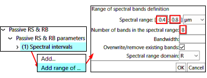

WP1 - Reflectance
Objective:
-
To manipulate lambertian surfaces (i.e., isotropic radiance and reflectance) and spectral / broadband terms: radiance \(L_{\lambda}(\Omega)\) / \(L_{\Delta \lambda}(\Omega)\), exitance \(M_{\lambda}\) / \(M_{\Delta \lambda}\), irradiance \(E_{\lambda}\) / \(E_{\Delta \lambda}\), bi-directional reflectance factor (BRF): \(\rho_{\lambda}(\Omega)=\frac {\pi.L_{\lambda}(\Omega)} {E_{\lambda}}\) / \(\rho_{\Delta \lambda}(\Omega)=\frac {\pi.L_{\Delta \lambda}(\Omega)} {E_{\Delta \lambda}}\), ...
-
To create mono-band (1 band) & multi-band (N bands) simulations of 2D scenes and display images {\(\rho_{xy,\lambda}(\Omega), L_{xy,\lambda}(\Omega)\),...} and 2D/1D plots: \(\overline{\rho}_{xy,\lambda}(\Omega),\overline{\rho}_{xy,\lambda}(\theta, \phi=cst)\), LUT...
-
To create a spectral sequence (cf. III.5.3 ) of mono-band simulations and its LUT.
The 2 DART modes (Bi-Directional Monte Carlo, Forward: initial mode) give similar image and radiative budget (RB) products. 'Forward' (i.e., 'DART-FT: Passive RS & RB' uses the DOM; 'DART-RC: LiDAR' uses the RC method) is optimal for simple scenes and RB. Being optimal for complex 3D scenes, 'Bi-Directional' (i.e., DART-Lux) is advised here. Screen copies show how to create WP1-Lux and WP1-FT simulations with parameters in Table below.
WP1A parameters with those specific to the Forward (DART-FT) and Bi-Directional (DART-LUX) modes. They are stored in xml files (i.e., text files) in the simulation 'input' folder. After entering them in the GUI, save the simulation (command File / Save simulation). Then, the symbol " * " on top of the editor menu panel disappears.
1) Preparation and run of a DART simulation: WP1A-FT (CT=3"), WP1A-Lux (CT=19")
Objective: to get started with the edition and run of a DART simulation, 1D and 2D displays,...
-
Create WP1A-* (
Simulation / New simulation): * = FT or LUX. It creates 2 empty folders (input, output) in folder WP1A-*. -
Enter data of the table above into the simulation (GUI command
Parameters / Editor)
 Light propagation mode: Bi-Directional (\(\implies\) DART-LUX *.Lux simulations) or Forward (DART-FT)
Light propagation mode: Bi-Directional (\(\implies\) DART-LUX *.Lux simulations) or Forward (DART-FT)
Radiation menu.  Light propagation mode: 'Forward' to create WP * -FT simulations and 'Bi-Directional' to create WP * -Lux simulations.
Light propagation mode: 'Forward' to create WP * -FT simulations and 'Bi-Directional' to create WP * -Lux simulations.  'Transition:TOA \(\leftrightarrow\) BOA": Analytic model'.
'Transition:TOA \(\leftrightarrow\) BOA": Analytic model'.
- Irradiance or radiance (see below): here, an analytic model (option: "TOA \(\rightarrow\) BOA transfer") derives BOA irradiance {\(E_{BOA,\lambda}, SKYL_{\lambda}\)} from "Thuiller-Kurucz" TOA spectral irradiance \(E_{TOA,\lambda}\) in database '
solar_constant.db; \(W/m^2/\mu m\)) and atmosphere properties in DART database 'dart_atmosphere.db. It does not compute the BOA \(\rightarrow\) TOA transfer and therefore the TOA data (\(\implies\) in the LUT: \(L_{TOA}^{\uparrow}(\Omega)=L_{BOA}^{\uparrow}(\Omega) \:\forall \Omega\) and \(M_{BOA} = M_{TOA}\).
Note
Other scene illumination: "spectral radiance \(L_{BOA,\lambda}(\Omega)\)", band irradiance/solar constant \(E_{BOA,\Delta \lambda}\): \(W/m^2\), \(SKYL_{\Delta \lambda}\) (1: cloud cover = 100%; 0: atmosphere does not scatter), or "spectral irradiance \(E_{BOA,\lambda}\) \((W/m^2/\mu m) + SKYL_{\lambda}=\frac {E_{sky,\lambda}} {E_{BOA,\lambda}}\)".
Question
The analytical model is less accurate than atmosphere RT, and is more accurate for \(\rho_{scene}\) than for \(L_{scene}\). Why ?
Specification of TOA irradiance using the spectral irradiance table ThKur.
-
Forward parameters: DART-FT iterates N times (here, N=5). IterX is the extrapolated data from last 4 iterations.
-
BI-directional parameters:
 Max scattering order,
Max scattering order,  Pixel size, Number of samplings/pixel,...
Pixel size, Number of samplings/pixel,...

Parameters specific to the Bi-directional mode (a) and Forward mode (b).
- Spectral intervals (see below): {central wavelength \(\lambda_m\), bandwidth \(\Delta \lambda\); \(\mu m\)}. A mouse right click on 'Spectral intervals' adds single bands or a range of bands. The index () indicates the number of user defined intervals.

Setting the spectral band [0.70 0.71] and its mode R.
- DART products (see below)

BRF/BTF menu: products. a) Forward mode (left) and Bi-Directional mode (right). Here, \(\theta _{max} = 25° \implies\) only images with \(\theta _v <25°\) are stored to save computer memory.
- Optical property (see below): create reflectance \(\rho=0.5\), called "Lamb_ro=0.50", by multiplying reflectance \(\rho=1\) of model "reflect_equal_1_trans_equal_0_0" in database
lambertian_mineral.dbby 0.5 for all bands.
Setting the optical property "Lamb_ro=0.50": \(\rho=0.50\). a) For 1 band only. b) For all bands.
The Earth scene (see below): infinitely repetitive horizontal 50m x 50m ground scene, with 1m x 1m discrete cells. The ground optical property is "Lamb_ro=0.50. For DART-Lux, spatial resolution is in Bi-directional parameters.
DART input data are stored in xml files (i.e., text files) in the simulation 'input' folder. Once they are all entered, save the simulation (option File / Save simulation). Then, the symbol "*" on top of the editor menu panel disappears.
Scene geometry.:
The scene is repetitive. It could be isolated or with an infinite continuous topography (slope). In DART-Lux, the number of scene repetitions is set in "Bi-directional" parameters.
: \(\Delta x=\Delta y, \Delta z\); For DART-FT: the cell size of the scene mock-up is the pixel size of the simulated images. For DART-Lux: cells are only used to simulate the 3D turbid elements elements and 3D RB.
Scene dimensions .
 Ground optical properties.
Ground optical properties.
Run DART: menu Run / DART runs sequentially 4 modules (directions, phase, maket, dart) and modules set in the "Properties" menu. Modules can be run 1 per 1. The GUI "Console" shows log data.
Display DART discrete directions: menu View / Directions 3D View
This 3D view shows the user-defined \(U\) upward and \(D\) downward discrete directions that sub-divide the \(4\pi\) space, and \(V\) user-added viewing directions. DART-FT tracks radiation in the \(U+D\) discrete directions, whereas DART-Lux tracks it in Monte Carlo derived directions. Images \(X_{xy}(\Omega_V)\), with \(X =\) radiance \(L\), reflectance \(\rho\) or brightness temperature \(T_B\), are stored for all \(V + U\) * directions, with \(U\) * a user-defined subset of the \(U\) directions. DART-FT simulates them for all U + V directions, and DART-Lux for \(V + U\) * directions. Text files (brf, radiance, tapp) store {\(\theta _V, \phi _V\), mean value \(\bar{X}_{xy}(\Omega_V)\) per simulated image \(X_{xy}(\Omega_V,\Delta\Omega_V)\). For the (\(U - U\) * ) directions where DART-Lux does not simulate images, they store \(\bar{X}_{xy}(\Omega_V)\) as an interpolation of data of the BRF map over \(\Delta\Omega_V\).
Image BRF map: \(X_{xy}(\theta_V \in [0;89], \phi_V \in [359]; \Delta\theta_V=\Delta\phi_V=1°\)). Only DART-Lux (bi-directional mode) creates it, if one sets the option in the Editor or option in the LUT.
a) 3D view of directions. b) Simulated and stored images, and stored brf file. \(X = \rho, L\) or \(T_B\).
2D display of the scene (only DART-FT : menu View/ Scene 2D)
It shows xy, xz and yz cross sections of the scene (see below). 3D data (e.g., scene temperature) can be overlaid.
3D view of the scene (menu View/ Scene 3D)
It shows a 3D view of the scene, including the Ox, Oy and Oz axes and sun rays (Figure below).
The simulated scene. a) 2D view: xy, xz, yz planes. Here: \(1^{st}\) xy plane. b) 3D view: axes, sun direction and the scene.
Display dart.txt and simulation.properties.txt (output folder): menu View/Report-Data files
- dart.txt: sIt stores input data ( band irradiance \(E_{TOA,\lambda}\) , \(E_{BOA,\lambda}\), \(SKYL_{\lambda}\),…)and a few results:
- DART-Lux: exitance \(M_\lambda\) and albedo \(A_\lambda\) or brightness temperature \(T_{B,_\lambda}\), possibly per time step i.
- DART-FT. 3 data per iteration i \(\in [1\ 1]\) and extrapolation \(X\) from \(I-3\) to \(I\).
- 1) Albedo \(A_{\lambda,i}\) / \(A_{\lambda,X}\) if band mode = R or Brightness temperature \(T_{B,\lambda,i}\) / \(T_{B,\lambda,X}\) if band mode = T or R+T;
- 2) \(A_{\lambda,X(i)}\)/\(T_{B,\lambda,X(i)}\) extrapolated from \(i-4\) to \(i-1\)
- 3) Exitance \(M_{BOA,\lambda,i}\) / \(M_{BOA,\lambda,X}\). Convergence if \(\frac{A_{\lambda,X(i)}}{T_{B,\lambda,X(i)}} \approx \frac{A_{\lambda,X}}{T_{B,\lambda,X}}\).
Question
Verify that \(M_\lambda =A_\lambda\) x \(E_{BOA,\lambda}\)
- simulation.properties.txt (see below): input data of DART modules.
SimulationProperties file: input parameters of DART modules. Although designed for "computer usage", this file is useful to check DART input parameters. Here, the \(1^{st}\) (index o) lambertian property stores reflectance \(R_0 = 0.5\), Diffuse transmittance TauDiffus=0, direct transmittance TauDirect = 0.
Display DART images: menu View / Image (see below)
A reflectance / radiance directional image imaN_VZ=xx_VA=y.mp# is a scene parallel projection onto a plane perpendicular to the viewing direction number N with zenith xx and azimuth yy angles. Hence, for an oblique direction it has a diamond shape (see below). Its ortho image (i.e., scene rectangular reference) is in the folder 'IMAGE PROJETEE'. Ortho images 'Exitance', 'Irradiance' and 'Albedo' are angular integrals of ortho images over \(2\pi^{+}\).
Note
Option 'Save as': to copy a current simulation as a new simulation with the same input folder. Here, WP1A-FT can be created from WP1A-Lux, then replacing light mode 'Bi-directional' by 'Forward'.
Question
Tool'Stats' of 'Mask Editor' (Figure 165.a): check that scene reflectance \(\rho(x,y)\) fluctuates around 0.5 in all DART-Lux images and is exactly 0.5 in all DART-FT images (Figure below .b). Why?
Question
"Simulation / Simulation explorer": short-cut to the files of the simulation. Example: check that the "output" folder of the simulation stores DART products per spectral band q, in folders BANDq in folders 'BRF' and 'Radiance', and per iteration i in folders ITERi, each one with a folder 'IMAGES_DART' that stores DART images.
Question
The BRF map {\(\rho_{scene}(\theta,\phi), \theta \in [0 89], \phi \in [0 359], \Delta\theta=\Delta\phi=1°\)} (90 lines x 360 columns) of DART-Lux has \(\bar{\rho}_{scene}= 0.5001\) and \(\sigma_{\rho_{scene}} = 5 10^{-2}\). In theory, \(\bar{\rho}_{scene}= 0\) and \(\sigma_{\rho_{scene}}= 0\). How to decrease \(\sigma_{\rho_{scene}}\)?
Question
Check: \(M_{xy,\lambda}^{DART-FT}=A_{xy,\lambda}^{DART-FT}. E_{BOA,\lambda} =\pi . L_{xy,\lambda}^{DART-FT}\). Conversely to DART-FT, DART-Lux does not simulate \(M_{xy,\lambda}\) images.
DART images and menus 'View' / 'Image' to display images and image statistics. a) DART-Lux: nadir image (correct mean value (i.e., 0.5); Monte Carlo noisy aspect) and BRF map. b) DART-FT: nadir and oblique (\(\theta_v=22.4°, \phi_v=30°\)) images. Pixels outside the simulated scene have a NaN value (yellow color).
Plot 1D and 2D scene reflectance:
View/Directonal R.../1D \(\rho_{scene}(\theta_V , \phi_V = cst)\). Plot of file BRF \((\theta_V,\phi_V,\rho_{scene}(\theta_V , \phi_V))\) with or without interpolation.
View/Directonal R.../2D \(\rho_{scene}(\theta_V , \phi_V = cst)\). Plot of file BRF \((\theta_V,\phi_V,\rho_{scene}(\theta_V , \phi_V))\) with interpolation.
View BRF map: \(\rho_{scene}(\theta_V , \phi_V)\). Plot from \(\rho_{scene}(\theta_V , \phi_V )\) in the BRF map with \(\theta_V \in [0;89]\) and \(\phi_V \in [0;359]\).
Extract & View from LUT: \(\rho_{scene}(\theta_V , \phi_V)\). Plot from \(\rho_{scene}(\theta_V , \phi_V )\) in the BRF
Question
\(\rho_{scene}^{DART-FT}(\Omega_V) = 0.5 \forall Omega_V\) and pixel \((x,y)\), while \(\rho_{scene}^{DART-Lux}(\Omega_V)\) has slignt fluctuation that decrase with \(N_{sample,BRF}\). Why?
a) Folder IMAGES_DART of DART images. b) File brf: mean image reflectance {\(\theta_v, \phi_v, \rho(\theta_v, \phi_v)\)}.
DART-Lux and DART-FT plots of 1D \(\rho_{scene}(\theta,\phi=cst)\) & 2D \(\rho_{scene}(\theta,\phi)\) with discrete (x) and sun (•) directions. DART-FT and DART-Lux
2) Scene spectral & broadband terms (8 bands: \([0.4 \:0.8\mu m]\), \(\Delta \lambda=0.05\mu m\))
Objective: to create a sequence of 8 mono-band simulations {\(\lambda_n\), \(\Delta \lambda_n=0.05\mu m\), \(n \in [1 \:8]\)} and LUT stores results (\(E_{BOA,\lambda}\) , \(M_{BOA,\Delta \lambda,…}\))
The broadband module transforms results into broadband data (\(E_{BOA,\Delta \lambda}\) , \(M_{BOA,\Delta \lambda}\) … with \(\Delta \lambda=\sum_n \Delta \lambda_n\)).
Note
Create WP1B- * from WP1A- * , with * = Lux or FT, with the option Save as.
Editor (to reduce CT): 2m x 2m scene, only nadir image (Maximalzenith angle of image: 1), no ortho-image(OrthoImage: No)
Run menu: create / edit and run the sequence (Sequence Launcher) WP1B-FT (CT=3s), WP1B-Lux (18s).
Warning
The root simulation must be "mono-band" (i.e., 1 spectral band) in spectral sequences (i.e., \(\lambda\) is a varying variable).
- Create a sequence
(file
*.xml; here:spectral_seq.xml)
Process & threads to run: to reduce computer time, run N simulations in parallel and only needed processes. Total number of threads is M.N if each simulation uses M threads.
Delete (not used here): reduce hard disk memory (automatic deletion or zip of products)
LUT: SQL database that can store most DART non imaging products (\(\rho_{scene}, L_{scene}\),...).
Add the variable parameters. Here: {"Central wavelength \(\lambda_{mean}\)" and "Spectral bandwidth \(\Delta \lambda\)" equal to \(0.5\mu m\)} with "Linear" variation mode to define 8 adjacent bands in \([0.4\mu m\: 0.8\mu m]\).
-
Edit a sequence: to edit an already created sequence.
-
Prepare / Run Sequence: it creates the
*_Launcher.xmlfile (here:spectral_seq_Launcher.xml) that stores the definition of all simulations (e.g., spectral_seq_0, spectral_seq_1,…), then creates the folder 'sequence' in the root simulation with all simulations and input folders, then runs the*launcher.xmlfile. - Start/Continue Sequence. : used to continue a sequence previously stopped with the command
Stop sequence.
Question
Verify with the plotsof the LUT: \(M_{scene,\lambda}\) = \(\rho_{scene,\lambda}.E_{scene,\lambda}, M_{scene,\lambda} = \pi.L_{scene,\lambda}\).
Multi-band simulation (8 bands [0.4 0.45],...,[0.75 0.8]): WP1B-Lux_multi
- Editor menu (option "Add range of"): set the 8 bands \(\iff\) 
- Set the LUT creation in the "Run" menu.
Question
The multi-band has the same results as the sequence of mono-band simulations and is much faster. Why?
Sequence of 8 mono-band simulations: \([0.4 \:0.45\mu m]\), \([0.45 \:0.5\mu m]\),...
a) General menu. b) Preferences and display options for the run of the sequence: Processes to run with N simulations in parallel (larger N \(\implies\) larger RAM). To delete products. Data to store in the LUT. Values (here : \(\overline{\lambda}\), \(\Delta \lambda\)) and variation mode (here  : linear) of the variable parameters (they vary together in a same group, and independently if not).
: linear) of the variable parameters (they vary together in a same group, and independently if not).
Data from the LUT: a) Plots: \(E_{TOA,\lambda}, E_{BOA_\lambda}, E_{BOA_\lambda}^{direct}, E_{BOA_\lambda}^{diffuse}, M_{BOA,\lambda}, L_{BOA,\lambda}\) Top of atmosphere (TOA) spectral irradiance: \(E_{TOA,\lambda}\) = spectral solar cst x cos(sun zenith angle). Bottom of atmosphere (BOA) spectral irradiance: \(E_{BOA,\lambda} = [t_{sun,dir}(\Omega_s) + t_{sun,dif}].E_{TOA,\lambda}\), with direct (along \(\Omega_s\)) \(t_{sun,dir}\) and diffuse \(t_{sun,dif}\) transmittance atmosphere that is simulated here as {gas: US Standard; aerosol: Rural 23km}. b) Values: reflectance, irradiance,… per spectral band.
Apply Tools / Band calculation tools / Broadband / Spectral sequence of monoband simulations to the sequence. The Broadband folder stores broadband \(\rho_{BOA,\Delta \lambda}, E_{TOA,\Delta \lambda}\),... with \(\Delta \lambda = 0.4\mu m\).
Broadband (Tools / Band calculation tools).Broadband data \(E_{BOA,\Delta\lambda}, M_{BOA,\Delta\lambda} and A_{\Delta\lambda}\). They can be computed (not here) using a sensor spectral sensitivity and sub-zones (i.e., masks) possibly created in DART View image menu. The Broadband folder also stores \(\rho_{\Delta\lambda}\) and \(L_{\Delta\lambda}\).
Names and locations of files that store BroadBand and Scene spectra data in simulation WP1B.
Note
Other method for Broadband (see below): run broadband.py with Tools / Python Script Launcher.
Tools / Python Script Launcher. It runs DART python modules. To run the Broadband.py module, get its command in the Broadband console , copy its script parameters in the bottom window and set paths between apostrophes (').
3) Vegetation spectra
(12 bands: \([0.4\mu m \:1\mu m]\), \(\Delta \lambda=0.05\mu m\)): WP1C
Objective: sequence and multi-band simulations as in WP1B with \(\rho_{ground}=\rho_{vegetation}\) instead of 0.5.
- Editor: Set \(\rho_{ground}(\lambda) = \rho_{grass\: rye}(\lambda)\) from database
Lambertian_vegetation.db; unset its multiplicative factor since it is equal to 1 (\(\implies\) simpler visual aspect of the menu), and use to plot \(\rho_{ground}(\lambda)\) (see below).
Menu "Optical & Temperatures properties": spectral reflectance "grass_rye" of database "Lambertian_vegetation".
Sequence of 12 mono-band simulations: WP1C-FT (CT=5"), WP1C-Lux (CT=28")
Plot the LUT spectral data (tool View / LUT to view): \(\rho_{scene}(\lambda)\), \(M_{scene}(\lambda)\), \(L_{scene}(\lambda)\),… (see below).
Question
Exitance \(M_{scene}(\lambda)\) and radiance \(L_{scene}(\lambda)\) spectra are proportional. Why? What is the factor?
Question
\(\frac {\partial E_{BOA}(\lambda)} {\partial \lambda}\) and \(\frac {\partial M_{BOA}(\lambda)} {\partial \lambda}\) vary differently; example: at \(\lambda \approx 0.7\mu m\), \(\frac {\partial M_{BOA}(\lambda)} {\partial \lambda} > 0\) and \(\frac {\partial E_{BOA}(\lambda)} {\partial \lambda} < 0\). Why ?
Tool View / LUT: scene reflectance (a), and irradiance / exitance / radiance (b).
Multi-band simulation (12 bands): WP1C-FT_multi (CT=1"), WP1C-Lux_multi (CT=2")
Question
The multi-band simulation gives the same results as the sequence, but is much faster. Why?
4) Atmosphere analytic model vs. Atmosphere RT
(270 bands: \([0.3\mu m \:3\mu m]\), \(\Delta \lambda=0.01\mu m\)): WP1D-FT (CT=1")
Objective: to compare \(E_{BOA}\) simulated with the "Analytical model" and "Atmosphere radiative transfer (RT)" modes.
Default atmosphere: gas model: US Standard, aerosol model: Rural (VIS=23km). The Analytic model (Figure 158.a) (DART-FT: CT=1"; DART-Lux: CT=7") is less accurate and faster than the atmosphere RT (Figure 158.b) (DART-FT-RT: CT=5'30"; DART-Lux-RT: CT=5'40"). The file atmosphereMaket.nc stores atmosphere properties: transmittance per absorbing gas, for all scattering gases and aerosols, etc.
Irradiance / exitance LUT spectra (\([0.3 - 3\mu m]\), \(\Delta \lambda=0.01\mu m\)) from the LUT. The irradiance spectra of the analytic model (a) is close to that of the "exact" atmosphere RT (b).
Sun irradiance calculator: www.pvlighthouse.com.au/calculators/solar%20spectrum%20calculator/solar%20spectrum%20cal culator.aspx.
5) Scene UV/VIS/ IR radiative budget: WP1E
Objective: to assess with sequence and multi-band simulations the accuracy of surface (\(\rho_{ground}=\rho_{grass\: rye}\)) radiative budget \(RB_{BOA}= E_{BOA}- M_{BOA}\) over \(\Delta \lambda_{sun} =[0.3\: 2.5\mu m]\), for different numbers \(N_{band}\) of bands to sample \(\Delta \lambda_{sun}\) , with \(N_{band} = 1\), 3 (UV \([0.3\: 0.4\mu m]\), VIS \([0.4\: 0.7\mu m]\), SWIR \([0.7\: 2.5\mu m]\)), 30 (10 bands for UV, VIS, SWIR).
\(RB_{BOA,\Delta \lambda}\): the LUT and dart.txt file store it if \(N_{band} = 1\); the tool Band calculation \ BroadBand computes it if \(N_{band} > 1\), possibly with wieghts \(g(\lambda)\) on ground reflectance and atmosphere terms \(X(\lambda)\) (\(\implies X_{\Delta \lambda} = \frac {\int_{\Delta \lambda} X(\lambda).g(\lambda).d\lambda} {g_{\Delta \lambda}=\int_{\Delta \lambda} g(\lambda).d\lambda}\); see below):
Weighting of reflectance: for a lambertian surface, the DART product \(M_{BOA,\Delta \lambda}^{DART}=\rho_{ground,\Delta \lambda}.E_{BOA,\Delta \lambda}\) is equal to the actual value \(M_{BOA,\Delta \lambda} = \int_{\Delta \lambda} \rho_{ground}(\lambda).E_{BOA}(\lambda).d\lambda\) if \(\rho_{ground,\Delta \lambda}\) is computed with the spectral weight \(g(\lambda) = E_{sun,BOA}(\lambda)\):
\(\rho_{ground,\Delta \lambda} = \frac {1} {\Delta \lambda}.\frac {\int_{\Delta \lambda} \rho_{ground}(\lambda).E_{sun,BOA}(\lambda).d\lambda} {\int_{\Delta \lambda} E_{sun,BOA}(\lambda).d\lambda} \neq \frac {\int_{\Delta \lambda} \rho_{ground}(\lambda).d\lambda} {\Delta \lambda}\) with \(E_{sun, BOA}(\lambda)\) from the DART atmosphere analytic model.
Weighting of atmosphere terms \(X_{\Delta \lambda}\) (in atmosphere.txt file) with the weight \(E_{sun, TOA}(\lambda): X_{\Delta \lambda} = \frac {\int_{\Delta \lambda} X(\lambda).E_{sun,BOA}(\lambda).d\lambda} {\int_{\Delta \lambda} E_{sun,BOA}(\lambda).d\lambda}\) with X={\(T_{g,abs},T_{g,scat},\omega_{aer}\)}; \(\Delta \tau_{aer}^{*}=\frac {\int_{\Delta \lambda} \Delta \tau_{aer}(\lambda).E_{sun,BOA}(\lambda).d\lambda} {\int_{\Delta \lambda} E_{sun,BOA}(\lambda).d\lambda}\). DART gives \(\Delta \tau_{aer}^{*}\) but \(\Delta \tau_{aer}^{**}=-ln(\frac {\int_{\Delta \lambda} e^{\Delta \tau_{aer}(\lambda)}.E_{sun,BOA}(\lambda).d\lambda} {\int_{\Delta \lambda} E_{sun,BOA}(\lambda).d\lambda})\) is a bit better.
Weighting of atmosphere terms and reflectance .
WP1Ea: multiband with 3 bands (UV, VIS, SWIR)
The 3 spectral TOA irradiance \(E_{BOA,\Delta \lambda_i}\) , BOA exitance \(M_{BOA,\Delta \lambda_i}\) ,... from the LUT and dart.txt file (see below) show that \(E_{TOA,\Delta \lambda}\) is larger in the VIS band, "Total back-scattered to BOA" is null in the absence of atmosphere RT,…
- \(M_{BOA,\Delta \lambda_i}\) can greatly change if \(E_{BOA}(\lambda)\) weight is used or not for computing \(\rho_{ground,\Delta \lambda}\) . For example, over \([0.7\: 2.5\mu m]\), \(M_{BOA,\lambda} =70.1 \:W/m^2/\mu m\) without weight and 100.1 \(W/m^2/\mu m\) with weight (table below). Why?
\(E_{\Delta \lambda}\) and \(M_{\Delta \lambda}\) per band: dart.txt file (left) and LUT (right).
WP1Eb: 1 sequence of 3 mono-band simulations (UV, VIS,IR)
Set the sequencer: 2 variable parameters (central wavelength, bandwidth) with the 'Enumerate' mode.
Question
Use the sequence's LUT or dart.txt per simulation to check that \(E_{TOA,\Delta \lambda}\), \(E_{BOA,\Delta \lambda}\) and \(M_{BOA,\Delta \lambda}\) are as for WP1Ea.
WP1Ec: 3 sequences (UV, VIS, IR) of 10 mono-band simulations each (see below).
Apply the tool "BroadBand" per sequence to get \(E_{BOA,\Delta \lambda}\) and \(M_{BOA,\Delta \lambda}\) for each broadband UV, VIS and SWIR.
Question
Verify that \(E_{TOA,\Delta \lambda}\)$, \(E_{BOA,\Delta \lambda}\) are identical as in WP1Ea.
Question
Unlike in WP1Ea, \(M_{BOA,\Delta \lambda}\) varies very little if \(\rho_{ground,\Delta \lambda}\) is computed with or without \(E_{sun,BOA}(\lambda)\) weight. Why?
Sequencer menu. Definition of the 10 spectral bands (i.e., \(\lambda_i\), \(\Delta \lambda_i\), \(i \in [0\: 9]\)) that sample the spectral band UV).
TOA and BOA spectral irradiance and BOA exitance of the UV, VIS and SWIR LUTs. Analytic model.
WP1Ed: 1 band \(([0.3\mu m \:2.5\mu m])\)
Question
\(M_{BOA,\Delta \lambda}\) is exact if \(\rho_{ground,\Delta \lambda}\) is computed with the \(E_{sun,BOA}(\lambda)\) weight, and less accurate otherwise. Why?
WP1Ee, WP1Ef, WP1Eg: same as WP1Ea, WP1Ec and WP1Ed where "Atmosphere RT" replaces "Analytic model"
Compared to the "exact" atmosphere radiative transfer, the analytic model gives \(E_{BOA,\Delta \lambda}\) and \(M_{BOA,\Delta \lambda}\) with a relative error less than 4%.The relative error can increase with larger sun zenith angle.
TOA and BOA spectral irradiance / exitance \((W/m^2/\mu m\), \(W/m^2\)) from BroadBand and dart.txt file:
a) Analytic model. b) Atmosphere RT. \(\theta_s =30°\). US standard gas model. RuralV23 aerosol model. Symbol 'nw' stands for 'no weight' for reflectance and atmosphere. Atmosphere backscattering increases BOA irradiance by \(\approx 1.2%\) in UV and \(\approx 0.8%\) in VIS and SWIR. Most irradiance and exitance data are from the LUT and dart.txt files.